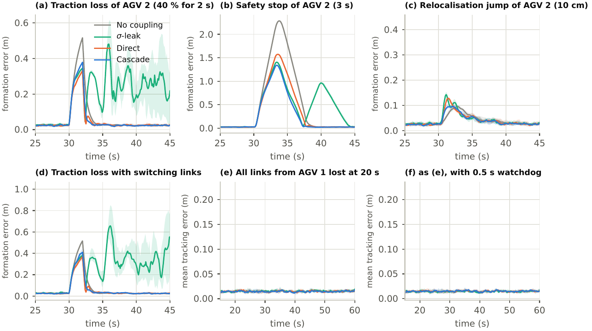
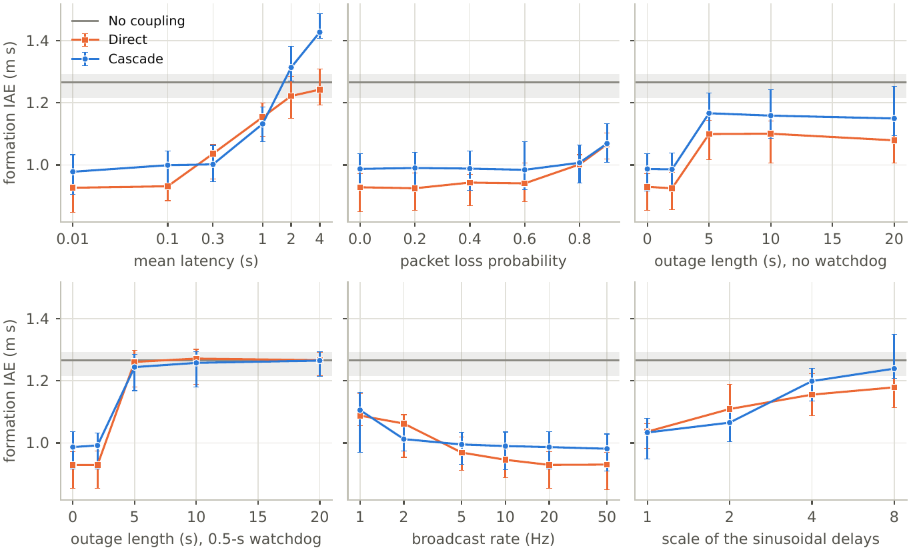
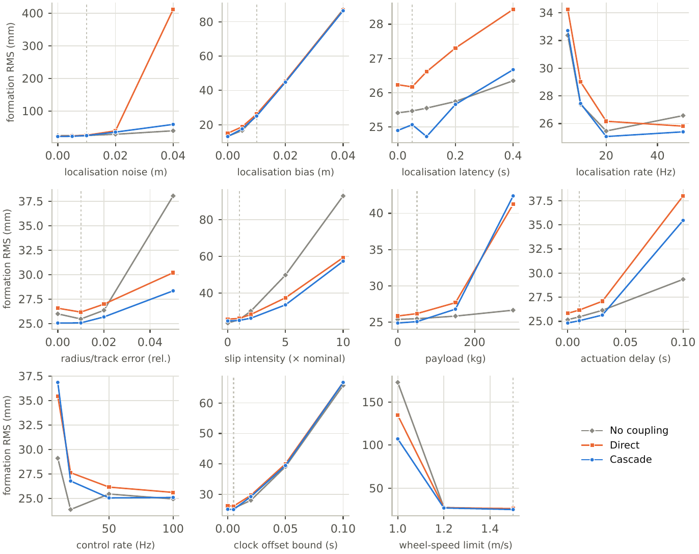
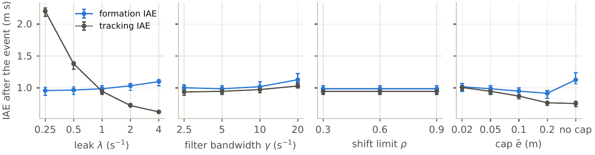
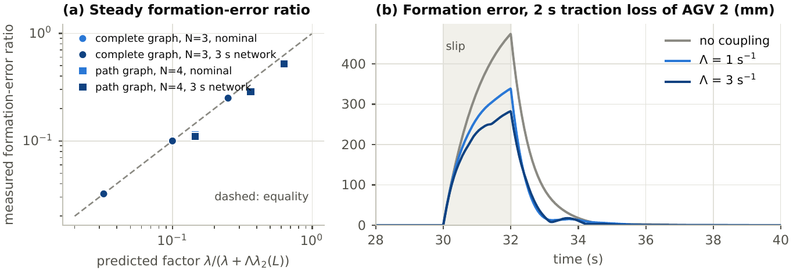

Technical report · 2026技术报告 · 2026
Delay-Tolerant Formation Tracking for Multi-AGV Systems via Reference-Shift Coupling通信时延下的多 AGV 编队跟踪控制：参考轨迹平移耦合方法
A cascade coupling law whose stability does not depend on the communication delay, Lyapunov stability proofs that were checked numerically, and 4,894 runs on a high-fidelity AGV simulator.稳定性与通信时延无关的级联耦合控制律、经过数值核验的李雅普诺夫稳定性证明，以及在高保真 AGV 仿真器上的 4894 次仿真验证。
Same run, two controllers同一次仿真，两种控制器
Both panels replay the same simulation run on the high-fidelity AGV model: same seed, vehicles, sensor noise, Wi-Fi delays and disturbance. Only the coupling law differs; pick it above each panel.两个画面回放的是高保真 AGV 模型上的同一次仿真：随机种子、车辆参数、传感器噪声、Wi-Fi 时延和扰动完全相同，只有耦合控制律不同，可在每个画面上方切换。
The camera follows the reference formation, so a team that waits drifts backwards in the picture. Vehicles are drawn smaller than scale; grid: 1 m.镜头跟随参考编队，因此减速等待的车队会在画面中向后漂移。车体按缩小比例绘制；网格间距 1 m。
Results at a glance主要结果
4,894
simulation runs on the high-fidelity model, including paired comparisons with baselines tuned on separate seeds.次高保真模型上的仿真，包括与对照控制器的配对比较，对照控制器在独立的随机种子上调参。
0
failures of the cascade, for latencies up to 4 s, 90 % packet loss, outages, 12 vehicles and 8× the tuned gain.次级联控制器失败：时延最长 4 s、丢包率 90 %、通信中断、12 辆车、8 倍调参增益下均未失败。
−47 %
formation error (IAE) after a 3-s safety stop of one AGV, cascade vs. no coupling (R6).单车急停 3 s 后的编队误差积分（IAE），级联耦合相对无耦合（R6）。
−21…32 %
formation error (IAE) after a traction loss, coupled laws vs. no coupling (R2 and R6).打滑后的编队误差积分，耦合控制律相对无耦合（R2 与 R6）。
The coupling is not free: while the others wait for a disturbed vehicle they fall behind their own references, so the tracking error grows (by 24 % in the median for the cascade). In nominal operation the formation accuracy, about 3 cm RMS, is set by the localisation error, which no coupling law can observe.耦合并非没有代价：其他车辆等待受扰车辆时会落后于各自的参考轨迹，跟踪误差因此增大（级联耦合的中位数增加 24 %）。正常运行时编队精度约为 3 cm RMS，由定位误差决定，任何耦合控制律都无法观测并消除它。
Problem and controller问题与控制律
A team of differential-drive AGVs has to move as one rigid formation, for example to carry a large object together. Each vehicle tracks its own reference trajectory; together the references form the formation. As long as every vehicle tracks well the formation holds, but when one vehicle is disturbed (it slips or makes a safety stop) the others do not notice and the formation tears apart. Coupling the vehicles over the network lets the others react. The network, however, is Wi-Fi: delays differ from link to link, change over time and jump, and packets are lost. Delayed coupling can destabilise the team.一组差速驱动 AGV 需要像一个刚体一样保持队形运动，例如协同搬运大件物体。每辆车跟踪各自的参考轨迹，所有参考轨迹合起来构成队形。只要每辆车都跟踪得好，队形就能保持；但一旦某辆车受到扰动（打滑或安全急停），其他车并不知道，队形就会被拉开。通过网络把车辆耦合起来，可以让其他车做出反应；然而网络是 Wi-Fi：各链路时延不同、随时间变化甚至跳变，还会丢包。带时延的耦合可能使整个车队失稳。
The design below keeps delayed data out of the feedback loop altogether. Neighbour data drive a small filter on each vehicle that shifts the vehicle's own reference; an unchanged tracking law follows the shifted reference.下面的设计让带时延的数据完全不进入反馈回路：邻居数据只驱动每辆车上的一个小型滤波器，用来平移本车自己的参考轨迹；跟踪控制律保持不变，去跟踪平移后的参考轨迹。
Gains used in the study: λ = 1 s⁻¹, Λ = 1 s⁻¹ (tuned), γ = 5 s⁻¹, ρ = 0.6, ē = 5 cm, ψ = 0.7, b = 3 m⁻².研究中使用的参数：λ = 1 s⁻¹，Λ = 1 s⁻¹（调参所得），γ = 5 s⁻¹，ρ = 0.6，ē = 5 cm，ψ = 0.7，b = 3 m⁻²。
The tracking law sees only the vehicle's own pose and its shifted reference. A late or missing packet changes how the reference is shifted, never the feedback loop, so each vehicle's Lyapunov function never sees the network.跟踪律只用本车位姿和平移后的参考。迟到或丢失的数据包只影响参考如何平移，不影响反馈回路，因此每辆车的李雅普诺夫函数完全不受网络影响。
The shift velocity is limited to ρ = 60 % of the reference speed, so the shifted reference stays a feasible trajectory with 40–160 % of the reference speed. A vehicle can slow down to wait, and the extra demand of the coupling stays bounded instead of growing with the gain; a direct delayed coupling diverged in the study when its gain pushed the drives into saturation.平移速度限制在参考速度的 ρ = 60 % 以内，平移后的参考始终是速度为原参考 40–160 % 的可行轨迹。车辆可以减速等待，而耦合带来的额外需求始终有界，不会随增益增大；研究中直接时延耦合正是在增益把驱动推入饱和时发散的。
The vehicle's own error enters its filter only up to ē, so a vehicle that cannot follow (it is stuck or slipping) does not push its own reference ahead; a leak λ returns the shift to zero once the disturbance is over.本车误差进入滤波器时被限制在 ē 以内，因此无法跟随的车辆（卡住或打滑）不会把自己的参考继续往前推；扰动结束后，泄漏项 λ 让平移量回到零。
Builds on. The tracking law is the gain-scheduled unicycle law of De Luca, Oriolo and Vendittelli (2001). Feeding delayed data only into a reference filter follows synchronisation filters for robot teams, in particular Peng, Ngo and Liu (Control Eng. Practice, 2023), and coordinated path following. New here, as far as our literature survey goes: the combination for kinematic unicycles with individual references (second-order filter for exact feed-forward, saturation for feasibility, leak for exact convergence), explicit delay-independent estimates, and a formula for what the coupling buys.借鉴与创新。跟踪律采用 De Luca、Oriolo 与 Vendittelli（2001）的增益调度独轮车跟踪律；“时延数据只进入参考滤波器”的思路借鉴了机器人编队的同步滤波器，特别是 Peng、Ngo 与 Liu（Control Engineering Practice，2023），以及协同路径跟踪方法。据文献调研，本工作的新意在于：针对“各自跟踪独立参考轨迹的运动学独轮车”给出这一组合（二阶滤波器保证前馈精确、饱和保证可行、泄漏项保证精确收敛），给出与时延无关的显式估计，以及一个刻画“耦合到底带来多少收益”的公式。
What is proven理论结果
For kinematic unicycles, every bounded delay (heterogeneous, time-varying, discontinuous) and every directed, possibly switching communication graph.适用于运动学独轮车模型、任意有界时延（各链路不同、时变、可跳变）以及任意有向、可切换的通信拓扑。
Theorem · convergence定理 · 收敛性
Bounded and convergent for any bounded delay任意有界时延下误差有界且收敛
Tracking and formation errors stay bounded and converge to zero. Boundedness holds without any bound on the delays (Razumikhin and max-norm arguments).跟踪误差与编队误差有界并收敛到零；有界性对时延的大小没有任何限制（Razumikhin 方法与最大范数论证）。
Proposition · strict Lyapunov function命题 · 严格李雅普诺夫函数
Explicit constants for the tracking law跟踪律的显式常数
A strict Lyapunov function for the gain-scheduled law, written with a free length scale so that all constants are dimensionally consistent.为增益调度跟踪律构造严格李雅普诺夫函数，并引入自由长度尺度，使所有常数量纲一致。
Lemma + theorems · rates引理与定理 · 收敛速率
Exponential convergence, delay-independent gains指数收敛，增益与时延无关
A Halanay-type estimate for the delayed filter network gives exponential convergence and a local input-to-state estimate whose gains do not depend on the delay.对带时延的滤波器网络给出 Halanay 型估计，由此得到指数收敛，以及增益与时延无关的局部输入-状态稳定（ISS）估计。
Proposition · new命题 · 新结果
Benefit of the coupling耦合带来的收益
Persistent local errors reach the tracking errors through持续存在的本地误差按下式传递到跟踪误差：
On undirected graphs their mean is untouched, and the formation error shrinks by at least the factor λ/(λ + Λλ₂(L)), for any delay (λ₂(L): algebraic connectivity of the graph).在无向图上，误差的均值不变，编队误差至少按因子 λ/(λ + Λλ₂(L)) 缩小，且对任意时延成立（λ₂(L) 为通信图的代数连通度）。
Independently reviewed and checked numerically. Two referee-style passes over the proofs found no error in the theorems; missing hypotheses, one incorrect remark and notation issues were fixed, and the proof of the direct-coupling delay bound was added. Every number in the report was re-checked against the stored results, and every reference against publisher records. Every statement was also checked with an event-driven, error-controlled simulation: 2×10⁷ random evaluations of the Lyapunov inequalities, 1,000 exactly integrated delayed networks and 280 closed-loop runs with delays up to 4.2 s and 13 % packet loss produced no violation.经过独立审查和数值核验。以审稿人的标准对证明做了两轮独立审查：定理本身未发现错误；补全了缺失的前提条件，修正了一处错误的注释和符号问题，并补充了直接耦合时延界的证明。报告中的每个数字都与保存的仿真结果重新核对过，每条参考文献都与出版方记录核实过。此外还用事件驱动、误差可控的仿真逐条核验：2×10⁷ 次李雅普诺夫不等式随机检验、1000 个精确积分的时延网络、280 次时延最长 4.2 s 且丢包 13 % 的闭环仿真，均未出现违反。
Simulation study: does it work on a real AGV?仿真研究：在真实 AGV 上是否有效？
The theorems hold for kinematic unicycles. To narrow the sim-to-real gap, the controller was tested on a high-fidelity model that violates their assumptions on purpose. Every layer can be switched to its ideal version; in the ideal limit the simulator reproduces an independent event-driven simulator to 0.34 mm.理论结果针对运动学独轮车模型。为了缩小 sim-to-real 差距，我们在一个刻意违反理论假设的高保真模型上测试控制器。每一层都可以切换为理想版本；在理想极限下，该仿真器与另一个独立的事件驱动仿真器的结果相差不到 0.34 mm。
- 50 Hz on each vehicle's own clock每车按本地时钟以 50 Hz 运行
- clock offset ±5 ms, drift ±20 ppm时钟偏差 ±5 ms，漂移 ±20 ppm
- 10 ms actuation delay执行延迟 10 ms
- PI wheel-speed loops, anti-windupPI 轮速环，带抗饱和
- torque limit 20 N·m, speed limit 1.5 m/s扭矩上限 20 N·m，轮速上限 1.5 m/s
- set-point ramp 1 m/s²设定值斜坡 1 m/s²
- rigid-body dynamics, 150 kg + payload刚体动力学，150 kg + 载荷
- wheel radius and track errors ±1 %轮径与轮距误差 ±1 %
- longitudinal and lateral slip纵向与侧向打滑
- LiDAR fixes at 20 Hz, 50 ms latency激光雷达定位 20 Hz，延迟 50 ms
- noise 10 mm, slowly drifting bias噪声 10 mm，缓慢漂移的偏差
- fused with wheel odometry与轮式里程计融合
- 20 Hz broadcasts, 30 ± 15 ms + spikes20 Hz 广播，30 ± 15 ms 时延并有尖峰
- burst loss (Gilbert–Elliott), outages突发丢包（Gilbert–Elliott）、通信中断
- link switching链路切换
Fair comparison. Four laws share the same tracking law: no coupling; the cascade; the σ-leak filter (the reference-filter structure of Peng et al. transferred literally to unicycles; not their controller); and direct coupling, where delayed neighbour errors enter the tracking law. Each coupling gain was tuned on ten seeds never used for testing. Every comparison is paired (a seed fixes initial errors, vehicle parameters, network, noise and slip for all controllers), reported as mean or median with 95 % bootstrap intervals, and tested with Wilcoxon signed-rank tests with Holm correction.公平对比。四种控制律使用同一个跟踪律：无耦合；级联耦合（本文）；σ-leak 滤波器（把 Peng 等人参考滤波器的结构原样移植到独轮车模型，并非他们的控制器）；以及直接耦合（把带时延的邻居误差直接加入跟踪律）。每个耦合增益都在十个从不用于测试的种子上调参。所有比较都是配对的（同一种子下所有控制器的初始误差、车辆参数、网络、噪声和打滑完全相同），结果给出均值或中位数及 95 % bootstrap 置信区间，并用带 Holm 校正的 Wilcoxon 符号秩检验做显著性检验。
| Exp.实验 | Question内容 |
|---|---|
| R0 | Fair tuning of every coupling gain on separate seeds; why the direct coupling diverges (drive saturation)在独立种子上公平调参；直接耦合为何发散（驱动饱和） |
| R1 | Comparison under the heterogeneous sinusoidal delays of the reference study, transport manoeuvre参考文献中的异构正弦时延下的对比，搬运工况 |
| R2 | With and without synchronisation on the high-fidelity model, nominal and with a traction loss高保真模型上有无同步的对比：正常运行与打滑 |
| R3 | Network sweeps: latency (10 ms–4 s), packet loss (up to 90 %), outages, broadcast rate网络扫描：时延（10 ms–4 s）、丢包（最高 90 %）、通信中断、广播频率 |
| R4 | Sim-to-real factors one at a time: localisation, calibration, slip, payload, delays, control rate, clocks, wheel limits逐一考察 sim-to-real 因素：定位、标定、打滑、载荷、延迟、控制频率、时钟、轮速上限 |
| R5 | Domain-randomised Monte Carlo over all factors (150 draws)对所有因素做域随机化蒙特卡洛（150 组） |
| R6 | Events: traction loss, safety stop, relocalisation jump, switching links, permanent link failure扰动事件：打滑、急停、重定位跳变、链路切换、链路永久失效 |
| R7 | Topology and scalability up to 12 vehicles; degree-normalised weights (R7b)拓扑与规模（最多 12 辆车）；按度归一化权重（R7b） |
| R8 | Sensitivity to the cascade parameters级联参数敏感性 |
| R9 | Step-size convergence, bit-identical re-runs, cross-validation of the simulator步长收敛性、逐位一致的重复运行、仿真器交叉验证 |
Disturbance events (R6)扰动事件（R6）
Warehouse route, 20 seeds, mean with 95 % bootstrap interval, over 15 s from the onset. Coupling lowers the formation error after traction losses and safety stops; the price is a larger tracking error, because the other vehicles wait. A relocalisation jump is a localisation artefact that no coupling law can see. The σ-leak filter is worse than no coupling after traction losses on this route, and in some runs it does not recover before the end of the run.仓库路线，20 个种子，均值及 95 % bootstrap 置信区间，统计窗口为扰动发生后 15 s。耦合降低了打滑和急停后的编队误差，代价是跟踪误差变大，因为其他车辆在等待。重定位跳变是定位层面的误差，任何耦合控制律都无法察觉。σ-leak 滤波器在这条路线上打滑后反而比无耦合更差，部分仿真到结束时仍未恢复。
Show as table以表格显示
How much delay is too much? (R3)时延多大会失效？（R3）
Formation IAE over 15 s after a 2-s traction loss against the mean network latency (warehouse route, 10 seeds; median and interquartile range). Both coupled laws stayed stable at every latency, but their benefit fades once the data are older than the disturbance: from 2 s on the cascade is 4–13 % worse than no coupling, and the direct coupling only 2–4 % better.2 s 打滑后 15 s 内的编队误差积分随平均网络时延的变化（仓库路线，10 个种子；中位数与四分位距）。两种耦合控制律在所有时延下都保持稳定，但当数据比扰动本身还“旧”时，耦合的收益就消失了：时延达到 2 s 及以上时，级联耦合比无耦合差 4–13 %，直接耦合也只好 2–4 %。
Show as table以表格显示
Figures from the report报告中的图








Takeaways结论与部署建议
Failures. The cascade did not fail in any run. The direct coupling failed when large effective gains pushed the drives into saturation and at high localisation noise; the σ-leak filter failed in 13 % of the randomised draws.失败情况。级联耦合在所有仿真中都没有失败。直接耦合在较大的有效增益把驱动推入饱和时、以及定位噪声较大时会失败；σ-leak 滤波器在 13 % 的域随机化样本中失败。
Benefit. Coupling reduces the formation error caused by disturbances the vehicles can observe: traction loss (21–32 % lower formation IAE), safety stops (47 % for the cascade), and calibration errors, slip and drive saturation (21–38 % lower formation RMS). It cannot remove localisation bias or clock offsets.收益。对于车辆能够观测到的扰动，耦合能减小编队误差：打滑（编队误差积分降低 21–32 %）、急停（级联降低 47 %），以及标定误差、打滑噪声和驱动饱和（编队 RMS 降低 21–38 %）；但它无法消除定位偏差和时钟偏差。
Cascade or direct coupling. With delays of tens of milliseconds the direct coupling improves the formation after a traction loss about as much as the cascade, at a lower tracking cost. The cascade is better for safety stops, drive saturation, slip and noisy localisation, has the smaller tail of bad cases, and is the only law that did not fail for any gain tested.级联还是直接耦合。时延为几十毫秒时，直接耦合在打滑后的编队改善与级联相当，且跟踪代价更低；级联在急停、驱动饱和、打滑和定位噪声较大时更好，坏情况的尾部更小，并且是唯一一个在所有测试增益下都没有失败的控制律。
Delays. Neither coupled law failed for any delay tested, but the benefit vanishes when the data are older than the disturbance (beyond 1–2 s latency for a 2-s traction loss).时延。两种耦合控制律在所有测试的时延下都没有失败，但当数据比扰动本身还旧时（对 2 s 打滑而言，时延超过 1–2 s），收益就会消失。
For deployment. Centimetre-level formations need a localisation bias of at most about 1 cm and clocks synchronised to a few milliseconds; coupling weights should be normalised by the node degree; a watchdog that drops silent neighbours is advisable, so that stale samples cannot act indefinitely.部署建议。要实现厘米级编队，需要约 1 cm 以内的定位偏差和几毫秒以内的时钟同步；耦合权重应按节点度归一化；建议加入看门狗，剔除长时间无数据的邻居，避免过期数据一直起作用。
Limitations局限性
- This study is simulation only. The vehicle parameters are generic values for an industrial differential-drive AGV, not those of a specific vehicle, and the tracking gains ψ and b are assumed.本研究仅为仿真。车辆参数为工业差速 AGV 的通用取值，而非某款具体车辆，跟踪增益 ψ 和 b 为假定值。
- The theorems are stated for kinematic unicycles; on the dynamic model their conclusions are supported by simulation, not by proof.定理针对运动学独轮车模型；在动力学模型上，结论由仿真而非证明支撑。
- The novelty is incremental: the architecture and the analysis tools are known; the contribution lies in their combination for kinematic unicycles with individual references, the explicit constants and the formation result.创新性是增量式的：整体架构和分析工具都是已有的；贡献在于针对各自跟踪参考轨迹的运动学独轮车给出这一组合、显式常数，以及编队收益的结论。
Reproducibility可复现性
Every run is a function of a JSON job description. Six independent random streams per seed, and common random numbers: the number of draws never depends on the controller or on parameter values.每次仿真都由一个 JSON 任务描述唯一确定。每个种子派生六路独立随机流，并使用公共随机数：随机数的抽取次数与控制器和参数取值无关。
Job lists, metrics, the software environment and a hash of the simulator are stored with the results; re-running stored jobs gives bit-identical numbers. Reducing the integration step tenfold changes no reported metric by more than 0.63 %.任务列表、指标、软件环境和仿真器源码哈希与结果一同保存；重新运行已存任务得到逐位一致的结果。积分步长缩小为 1/10 时，报告中的各项指标变化不超过 0.63 %。
run_all.py runs the unit tests and regenerates every number, figure and table (4,894 runs, about 1.5 h on 18 cores). Python 3.10, NumPy 2.2.6, SciPy 1.15.3, Matplotlib 3.10.7.run_all.py 依次运行单元测试并重新生成所有数据、图和表（4894 次仿真，18 核约 1.5 小时）。环境：Python 3.10、NumPy 2.2.6、SciPy 1.15.3、Matplotlib 3.10.7。
The animated runs above are ordinary jobs of the study (experiments R6, R2 and R7b), re-run with full trajectory recording; their metrics match the stored results.上方动画中的仿真就是研究中的原始任务（实验 R6、R2、R7b），只是重新运行并记录了完整轨迹；其指标与已保存的结果一致。